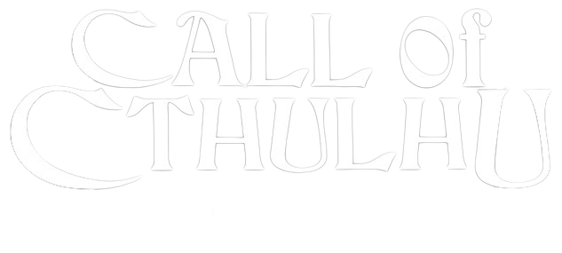
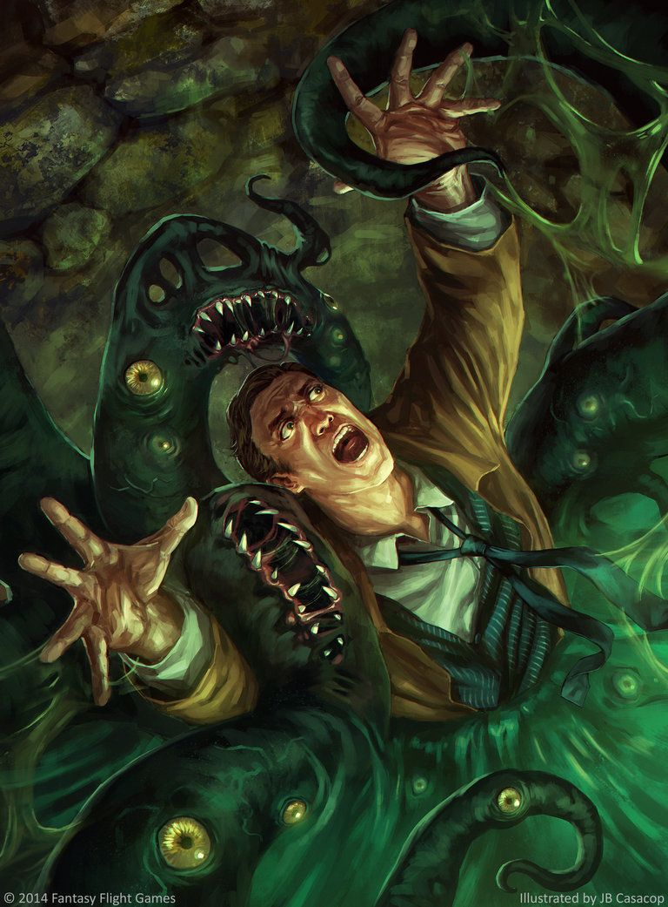

Call of Cthulhu é um famoso RPG de mesa baseado na obra de H.P. Lovecraft, um dos mestres do
horror cósmico. Este RPG mergulha os jogadores em um mundo de terror sobrenatural, mistério e
insanidade. Diferentemente de muitos outros jogos de RPG, onde os jogadores são heróis
poderosos, em Call of Cthulhu, eles desempenham o papel de investigadores comuns, enfrentando
forças além da compreensão humana.
Em Call of Cthulhu, o cenário principal é o nosso próprio mundo, mas com uma reviravolta
sombria. Os jogadores são frequentemente membros da Sociedade dos Caçadores de Livros (The
Society of the Bibliophiles), uma organização secreta que procura compreender e combater ameaças
sobrenaturais.
No entanto, essas ameaças são profundamente perturbadoras e alienígenas. Elas são representadas
por seres cósmicos, como Cthulhu, Nyarlathotep e Azathoth, que estão além da compreensão humana.
Os jogadores se deparam com rituais obscuros, artefatos misteriosos e cultistas insanos,
enquanto tentam impedir que o mundo mergulhe no caos.
Horror Cósmico
Call of Cthulhu é conhecido por seu horror cósmico, onde os jogadores percebem que a humanidade
é insignificante diante das forças ancestrais que espreitam nas sombras.
Insanidade
À medida que os investigadores se deparam com o desconhecido e o terrível, eles correm o risco
de perder a sanidade mental. A mecânica de insanidade é fundamental para o jogo.
Investigação
Os jogadores passam a maior parte do tempo investigando mistérios, resolvendo enigmas e seguindo
pistas em busca da verdade, muitas vezes com consequências mortais.
Vulnerabilidade
Os personagens em Call of Cthulhu são vulneráveis. Eles não são heróis superpoderosos, e a morte
é uma ameaça constante.
Misticismo e Ocultismo
O jogo explora temas de ocultismo, magia negra e cultos secretos, criando um ambiente tenso e
sinistro.
Em resumo, Call of Cthulhu oferece uma experiência de RPG única, onde a atmosfera sombria e a
sensação de impotência dos jogadores diante do desconhecido são fundamentais. É um jogo que
desafia a mente e a coragem dos jogadores enquanto eles enfrentam os horrores do universo de
Lovecraft.
